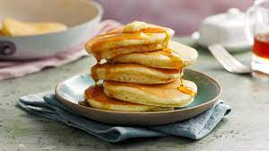

World's Best Pancakes

Description:
These pancakes are just the perfect amount of sweet without being too much. They're fluffy but not too heavy. The magic secret is a splash of vanilla and beaten egg whites.
Using melted butter instead of oil adds a lovely richness and flavor. You can also add blueberries, a sprinkle of cinnamon, chocolate chips, or anything else your heart desires.
Makes: About 12 pancakes.
Ingredients:
- 1 cup flour
- 2 TB sugar
- 2 tsp baking powder
- 1/4 to 1/2 tsp salt
- pinch of baking soda
- 2 TB oil or melted butter
- 3/4 to 1 cup milk (to achieve consistency)
- dash vanilla
- 1 egg, separated
Directions:
- Whisk the oil, 3/4 cup milk, vanilla, and egg yolk together: set aside.
- Mix dry ingredients.
- Add liquid and stir till lumpy and runny. Batter should resemble cake batter. You should just be able to pour it.
- Beat egg white until soft peaks form. Fold into batter. (You may add a pinch of sugar to add in forming of the peaks.)
- Fry pancakes in a pan or on a griddle until golden brown on each side.
- Serve pancakes with maple syrup, whipped cream, or fruit.